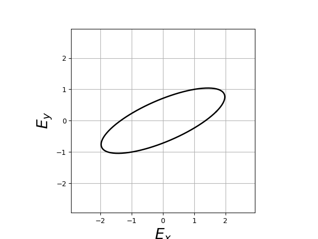
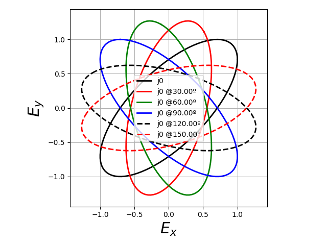
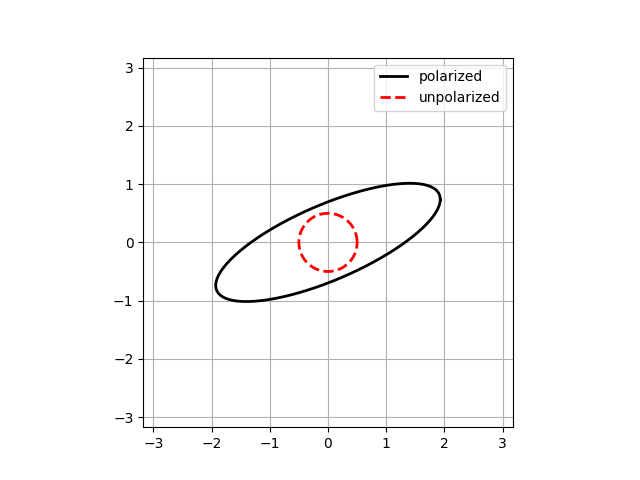
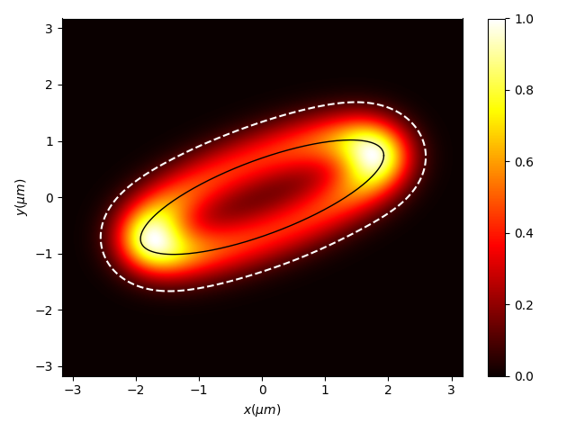
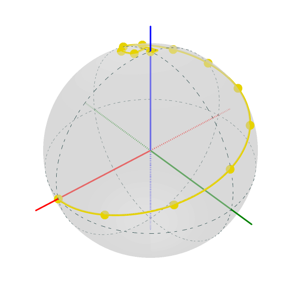
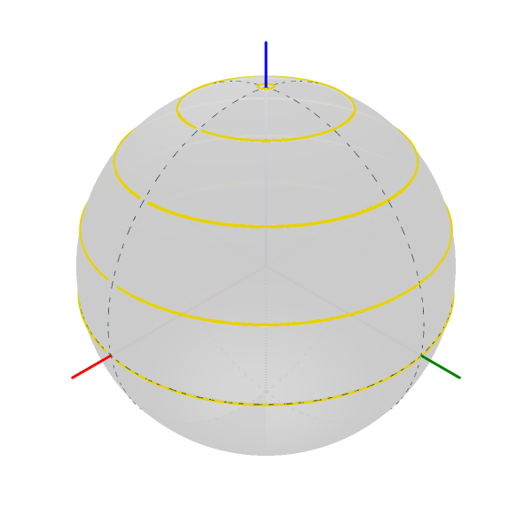
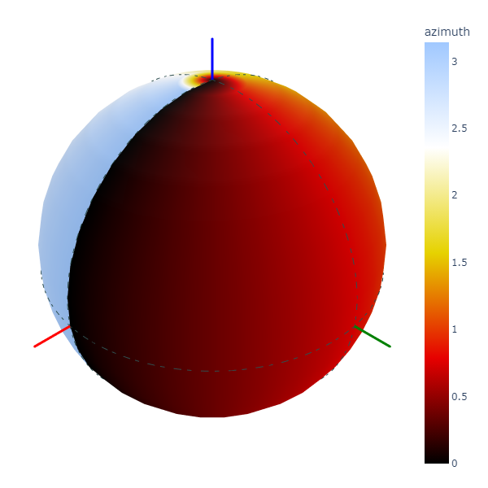

1. Python polarization


Free software: MIT license
Documentation: https://py-pol.readthedocs.io/en/master/
{kind=link}
1.1. Features
Py-pol is a Python library for Jones and Stokes-Mueller polarization optics. It has 4 main modules:
jones_vector - Light polarization states in Jones formalism (2x1 vectors).
jones_matrix - Optical elements polarization properties in Jones formalism (2x2 matrices).
stokes - Light polarization states in Mueller-Stokes formalism (4x1 vectors).
mueller - Optical elements polarization properties in Mueller-Stokes formalism (4x4 matrices).
Each one has its own class, with multiple methods for generation, operation and parameters extraction.
1.2. Examples
1.2.1. Jones formalism
Generating Jones vectors and Matrices
from py_pol.jones_vector import Jones_vector
from py_pol.jones_matrix import Jones_matrix
from py_pol.utils import degrees
j0 = Jones_vector("j0")
j0.linear_light(angle=45*degrees)
m0 = Jones_matrix("m0")
m0.diattenuator_linear( p1=0.75, p2=0.25, angle=45*degrees)
m1 = Jones_matrix("m1")
m1.quarter_waveplate(angle=0 * degrees)
j1=m1*m0*j0
Extracting information form Jones Vector.
print(j0,'\n')
print(j0.parameters)
j0 = [+0.707; +0.707]'
parameters of j0:
intensity : 1.000 arb.u
alpha : 45.000 deg
delay : 0.000 deg
azimuth : 45.000 deg
ellipticity angle: 0.000 deg
a, b : 1.000 0.000
phase : 0.000 deg
print(j1,'\n')
print(j1.parameters)
m1 * m0 @45.00 deg * j0 = [+0.530+0.000j; +0.000+0.530j]'
parameters of m1 * m0 @45.00 deg * j0:
intensity : 0.562 arb.u
alpha : 45.000 deg
delay : 90.000 deg
azimuth : 8.618 deg
ellipticity angle: -45.000 deg
a, b : 0.530 0.530
phase : 0.000 deg
Extracting information form Jones Matrices.
print(m0,'\n')
print(m0.parameters)
m0 @45.00 deg =
[+0.500, +0.250]
[+0.250, +0.500]
parameters of m0 @45.00 deg:
is_homogeneous: True
delay: 0.000 deg
diattenuation: 0.800
print(m1,'\n')
print(m1.parameters)
m1 =
[+1+0j, +0+0j]
[+0+0j, +0+1j]
parameters of m1:
is_homogeneous: True
delay: 90.000 deg
diattenuation: 0.000
1.2.2. Stokes-Mueller formalism
Generating Stokes vectors and Mueller matrices.
from py_pol.stokes import Stokes
from py_pol.mueller import Mueller
from py_pol.utils import degrees
j0 = Stokes("j0")
j0.linear_light(angle=45*degrees)
m1 = Mueller("m1")
m1.diattenuator_linear(p1=1, p2=0, angle=0*degrees)
j1=m1*j0
Extracting information from Stokes vectors.
Determining the intensity of a Stokes vector:
i1=j0.parameters.intensity()
print("intensity = {:4.3f} arb. u.".format(i1))
intensity = 1.000 arb. u.
Determining all the parameters of a Stokes vector:
print(j0,'\n')
print(j0.parameters)
j0 = [ +1; +0; +1; +0]
parameters of j0:
intensity : 1.000 arb. u.
amplitudes : E0x 0.707, E0y 0.707, E0_unpol 0.000
degree polarization : 1.000
degree linear pol. : 1.000
degree circular pol.: 0.000
alpha : 45.000 deg
delay : 0.000 deg
azimuth : 45.000 deg
ellipticity angle : 0.000 deg
ellipticity param : 0.000
eccentricity : 1.000
polarized vector : [+1.000; +0.000; +1.000; +0.000]'
unpolarized vector : [+0.000; +0.000; +0.000; +0.000]'
print(j1,'\n')
print(j1.parameters)
m1 * j0 = [+0.500; +0.500; +0.000; +0.000]
parameters of m1 * j0:
intensity : 0.500 arb. u.
amplitudes : E0x 0.707, E0y 0.000, E0_unpol 0.000
degree polarization : 1.000
degree linear pol. : 1.000
degree circular pol.: 0.000
alpha : 0.000 deg
delay : 0.000 deg
azimuth : 0.000 deg
ellipticity angle : 0.000 deg
ellipticity param : 0.000
eccentricity : 1.000
polarized vector : [+0.500; +0.500; +0.000; +0.000]'
unpolarized vector : [+0.000; +0.000; +0.000; +0.000]'
Extracting information from Mueller matrices.
m2 = Mueller("m2")
m2.diattenuator_retarder_linear(D=90*degrees, p1=1, p2=0.5, angle=0)
delay = m2.parameters.retardance()
print("delay = {:2.1f}º".format(delay/degrees))
delay = 90.0º
There is a function in Parameters_Jones_Vector class, .get_all() that will compute all the parameters available and stores in a dictionary .dict_params(). Info about dict parameters can be revised using the print function.
print(m2,'\n')
m2.parameters.get_all()
print(m2.parameters)
m2 =
[+0.6250, +0.3750, +0.0000, +0.0000]
[+0.3750, +0.6250, +0.0000, +0.0000]
[+0.0000, +0.0000, +0.0000, +0.5000]
[+0.0000, +0.0000, -0.5000, +0.0000]
Parameters of m2:
Transmissions:
- Mean : 62.5 %.
- Maximum : 100.0 %.
- Minimum : 25.0 %.
Diattenuation:
- Total : 0.600.
- Linear : 0.600.
- Circular : 0.000.
Polarizance:
- Total : 0.600.
- Linear : 0.600.
- Circular : 0.000.
Spheric purity : 0.872.
Retardance : 1.571.
Polarimetric purity : 1.000.
Depolarization degree : 0.000.
Depolarization factors:
- Euclidean distance : 1.732.
- Depolarization factor : 0.000.
Polarimetric purity indices:
- P1 : 1.000.
- P2 : 1.000.
- P3 : 1.000.
There are many types of Mueller matrices. The Check_Mueller calss implements all the checks that can be performed in order to clasify a Mueller matrix. They are stored in the checks field of Mueller class.
m1 = Mueller("m1")
m1.diattenuator_linear(p1=1, p2=0.2, angle=0*degrees)
print(m1,'\n')
c1 = m1.checks.is_physical()
c2 = m1.checks.is_homogeneous()
c3 = m1.checks.is_retarder()
print('The linear diattenuator is physical: {}; hogeneous: {}; and a retarder: {}.'.format(c1, c2, c3))
m1 =
[+0.520, +0.480, +0.000, +0.000]
[+0.480, +0.520, +0.000, +0.000]
[+0.000, +0.000, +0.200, +0.000]
[+0.000, +0.000, +0.000, +0.200]
The linear diattenuator is physical: True; hogeneous: True; and a retarder: False.
1.2.3. Drawings
The modules also allows to obtain graphical representation of polarization.
Drawing polarization ellipse for Jones vectors.
 {kind=link}
{kind=link}
Drawing polarization ellipse for Stokes vectors with random distribution due to unpolarized part of light.
 {kind=link}
{kind=link}
Drawing Stokes vectors in Poincare sphere.
  {kind=link}
{kind=link}
{kind=link}
1.3. Conventions
In this module we assume the light is propagated along the z direction. Then, the electric field is defined as:
where \(E_x\) and \(E_y\) are the two components of the Jones vector. Also, we define the x component as the origin of global phase, so it is 0 when \(E_x\) is real and positive. In the extraordinary case when \(E_x = 0\), the globalphase is extracted from the y component. Then, the most general unitary Jones vector can be described as:
where \(E_0\) is the electric field amplitude, \(\Phi\) is the global phase, and \(\alpha\) and \(\delta\) are the characteristic angles of the light state.
This phase convention also affects the description of retarders. For example, a linear retarder with an azimuth of 0º for its fast eigenstate will have the following Jones matrix:
where \(\Delta\) is the retarder retardance.
1.4. Authors

Jesus del Hoyo <jhoyo@ucm.es>
Luis Miguel Sanchez Brea <optbrea@ucm.es>
Universidad Complutense de Madrid, Faculty of Physical Sciences, Department of Optics Plaza de las ciencias 1, ES-28040 Madrid (Spain)
1.5. Citing
Hoyo, L. M. Sanchez-Brea, A. Soria-Garcia, "Open source library for polarimetric calculations “py_pol”", Proc. SPIE 11875, Computational Optics 2021, 1187506 (14 September 2021); doi: 10.1117/12.2597163, https://spie.org/Publications/Proceedings/Paper/10.1117/12.2597163?SSO=1.
del Hoyo, L.M. Sanchez Brea, "py-pol, Python module for polarization optics", https://pypi.org/project/py-pol/ (2019)
1.6. References
Goldstein "Polarized light" 2nd edition, Marcel Dekker (1993).
Gil, R. Ossikovsky "Polarized light and the Mueller Matrix approach", CRC Press (2016).
Brosseau "Fundamentals of Polarized Light" Wiley (1998).
Martinez-Herrero, P. M. Mejias, G. Piquero "Characterization of partially polarized light fields" Springer series in Optical sciences (2009).
Bennet "Handbook of Optics 1" Chapter 5 'Polarization'.
Chipman "Handbook of Optics 2" Chapter 2 'Polarimetry'.
Lu and RA Chipman, "Homogeneous and inhomogeneous Jones matrices", J. Opt. Soc. Am. A 11(2) 766 (1994).
1.7. Acknowlegments
This software was initially developed for the project Retos-Colaboración 2016 "Ecograb" (RTC-2016-5277-5) and "Teluro-AEI" (RTC2019-007113-3) of Ministerio de Economía y Competitivdad (Spain) and the European funds for regional development (EU), led by Luis Miguel Sanchez-Brea.
1.8. Credits
This package was created with Cookiecutter and the audreyr/cookiecutter-pypackage project template.